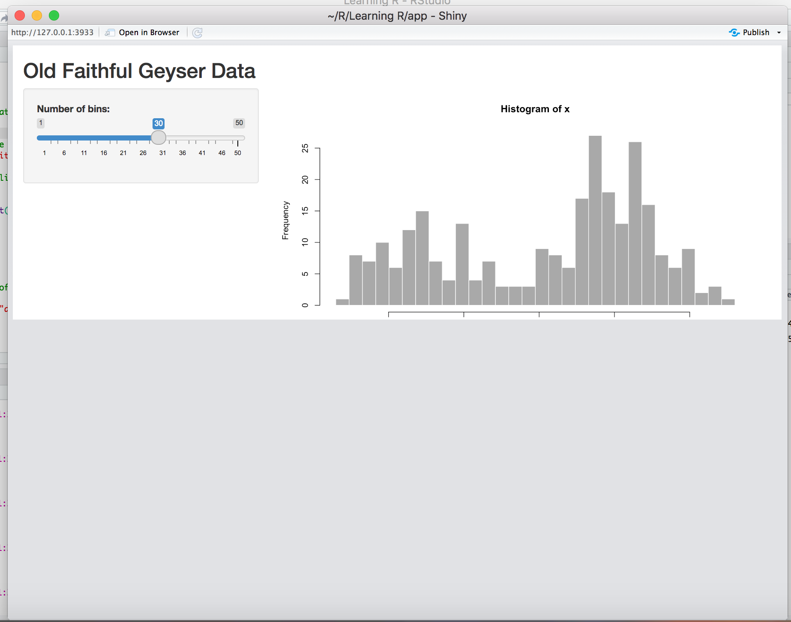

Do you want a half-shiny App ? Because that’s how you get a nice half-shiny app with half of your screen being grey like that :

For that I just had to split my UI and Server functions the wrong way. Instead off having an “app.R” in your application folder:
Besides the lame jokes, it took me ages to figure out what was actually going around. Turns out I was just following bad practices for splitting my app. What I did wrong was:
library(shiny)
# Define UI for application that draws a histogram
ui <- fluidPage(
# Put Here all your nice code
)
# Run the application
shinyApp(ui = ui, server = server)server <- function(input, output) {
# Here again anything working
}library(shiny)
source(file = "ui.R")
source(file= "server.R")
shinyApp(ui = ui, server = server)shinyUI(), like that:ui <- shinyUI({fluidPage(
# ALL the nice code you can imagine
)})Now the half-grey screen at the bottom of your app should be gone. You can’t imagine how much time I spent working on this using poor fixes like fixed app height that I needed to adjust perpetually depending on the changes.